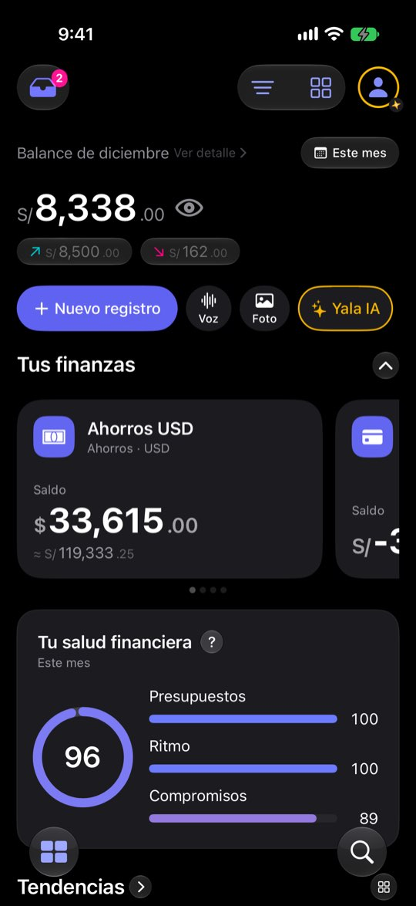
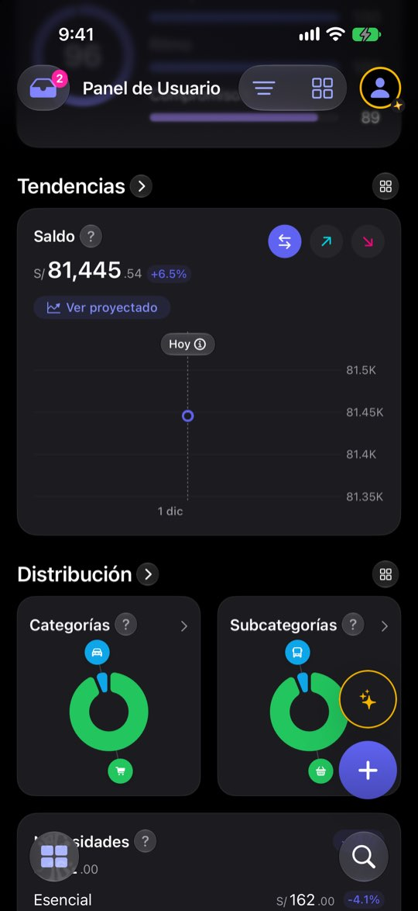
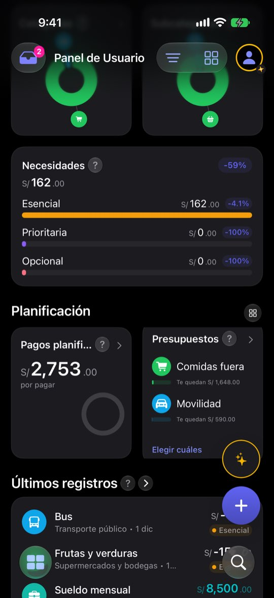

El día 1 del mes el Panel opina con un solo día de datos
HeroMonthData.state, .monthStart) y la vista no lo usa.ficha con el reloj del simulador en el 20 de noviembre de 2026: cuatro cuentas (Ahorros USD $33,615 · Cuenta Principal S/ −53,738.91 · Efectivo S/ 380 · Tarjeta de crédito S/ 1,284.30 por pagar), balance de noviembre S/ 6,882.40 (entró S/ 12,910.40, salió S/ 6,028), saldo total S/ 64,690.04 y una nota de salud de 99. El saldo negativo de la Cuenta Principal sale de cómo la semilla reparte dos años de gastos; aquí sirve para ver qué hace el Panel con una cuenta en rojo. Ninguna cifra es de una persona real.Lo que se ve hoy
- Observado Capturas 20-22 (reloj en el 1-dic-2026)
- Observado Código: el estado de inicio de mes se calcula pero el hero no lo lee (HeroMonthView, el dato no se usa en body)
- Hipótesis Un −100 % o un punto suelto el día 1 se lee como un error de la app



Alternativas
Todas con el mismo caso. Las cifras salen de las capturas salvo donde la maqueta dice «ilustrativo».
El Panel sabe que el mes empieza
Usa el estado que ya existe: «Día 1 de 31» en el hero, con un enlace al mes anterior, y la gráfica explica cuándo habrá línea.
A favor
- Reusa un estado que ya se calcula
- Solo textos y una condición
En contra
- No arregla la nota ni los porcentajes por sí sola
Ventana de 30 días al principio
Mientras el mes tenga menos de 7 días, la gráfica de saldo enseña los últimos 30 días, con el rótulo a la vista.
A favor
- La gráfica nunca queda en un punto
- El saldo es continuo: la ventana no mezcla conceptos
En contra
- La gráfica deja de seguir al selector de período esos días: hay que decirlo
- No sirve para Ingresos y Gastos, que sí empiezan de cero
Comparar y puntuar desde el día 7
Nota y variaciones (%) esperan una semana; mientras, se ve la del mes anterior.
A favor
- Acaba con el 96 del día 1 y el −100 %
En contra
- Una semana sin nota nueva
- Toca varios widgets (Necesidades es de otra zona)
El mes anterior los primeros días
Los días 1 a 3 el Panel abre en el mes que acaba de cerrar, con un aviso para volver al actual.
A favor
- El día 1 enseña algo completo y útil
En contra
- Cambiar el período solo es sorprendente
- Choca con «Este mes» como período por defecto del alta
Lado a lado
| A | B | C | D | |
|---|---|---|---|---|
| Explica el poco dato | Sí | Sí | Sí | Sí |
| Gráfica con forma el día 1 | No | Sí | No | Sí |
| Quita nota y −100 % | No | No | Sí | Sí |
| Cambia el período solo | No | Solo la gráfica | No | Sí |
Recomendación
A + B: el Panel dice que el mes empieza y la gráfica de saldo tiene forma desde el primer día. La nota del día 1 se resuelve mejor con la A del problema PN-2 (sin nota hasta tener datos) que con un plazo fijo.
Decide Jürgen
¿«Día N de M» en el hero (A)? ¿Ventana de 30 días en la gráfica de saldo los primeros días (B)? ¿O esperar una semana (C)?
Revisión por vistas 2.3 · Panel · 7-nov-2026. Capturas del simulador (build Debug de origin/2.3, iPhone 17 Pro e iPad Pro 13, iOS 27.2, modo oscuro, datos ficticios). Los siete perfiles son lentes simuladas, no entrevistas.